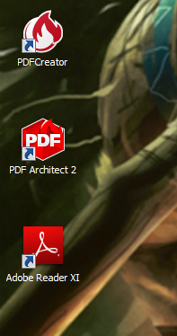
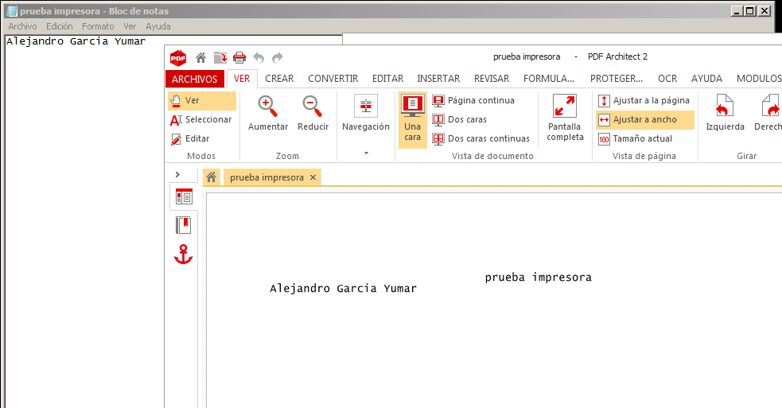
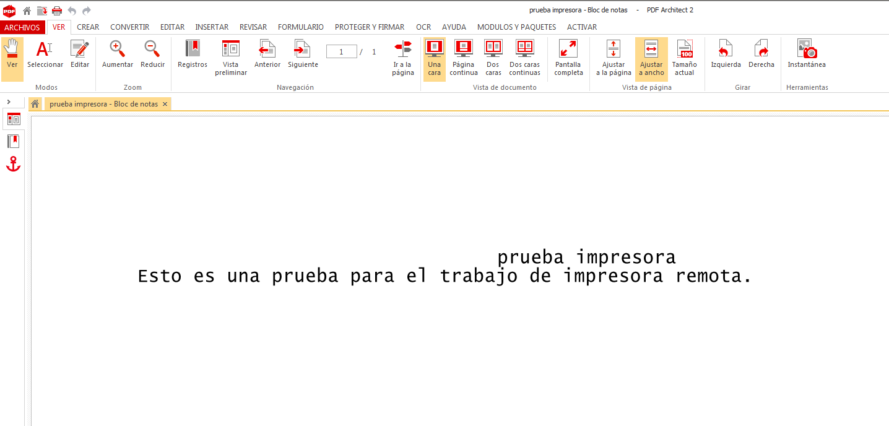
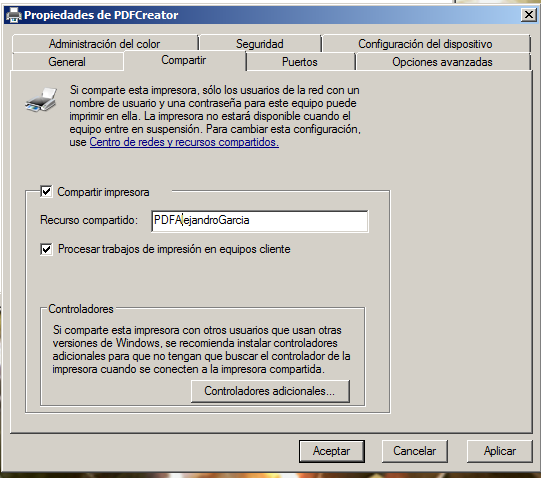
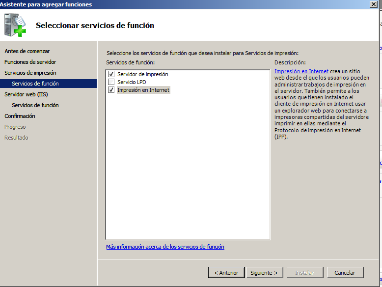
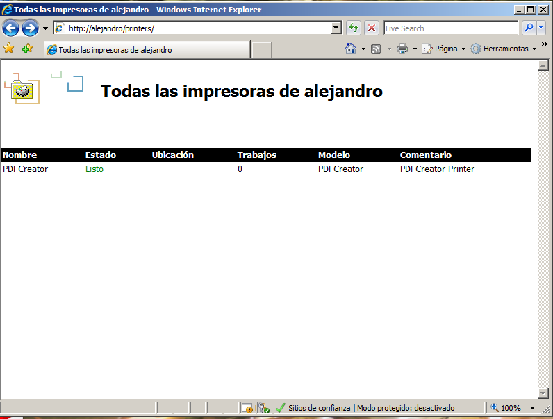
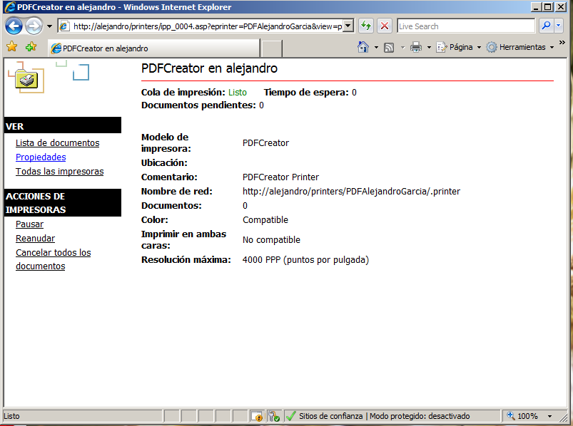
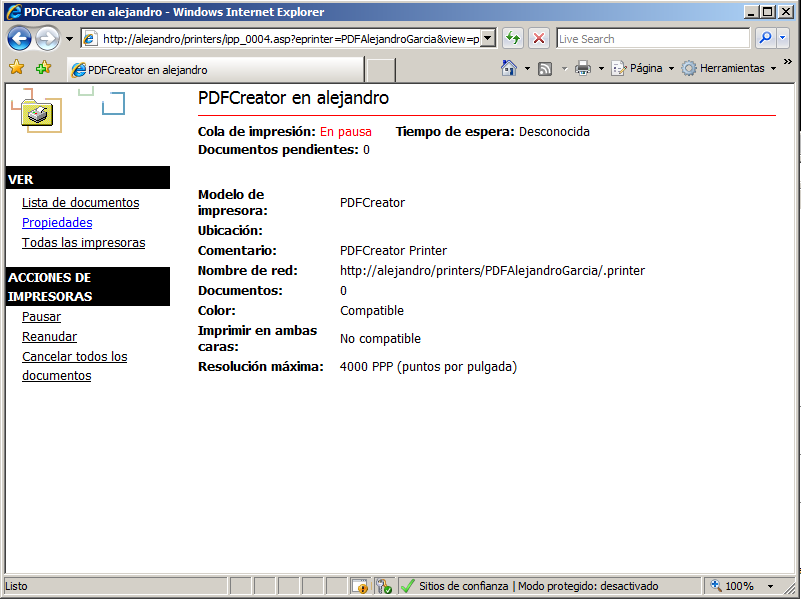
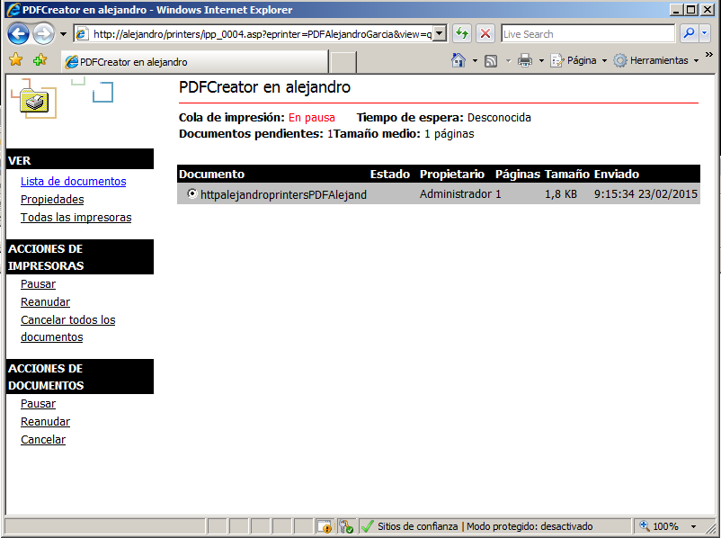

- Módulo: Administración de Sistemas Operativos
- Título del trabajo
- Componentes del grupo: Alejandro Garcia Yumar
- Curso Académico: 2015/2016
- Fecha de entrega: 23/02/2014
El ejercicio consiste en instalar y configurar una impresora en red, que utilizaremos de forma virtual el pdfcreator.
Intalamos el pdfcreator desde su citio oficial.
Probamos el pdfcreator que transforma un documento en pdf cuando le damos a imprimir.
 Para empezar debemos compartir la impresora como se ve en la siguiente imagen.
Ahora debemos instalar las funciones de impresora en nuestro windows server.
Hecho lo anterior acedemos a la direccin de la siguiente imagen para comprobar que funcione.
Al acceder, veremos la siguiente pantalla, en la que administraremos los distintos archivos que esten en cola.
 Ahora desde un cliente podremos poner a imprimir un documento, el cual nosotros podremos decir si dejar imprimir o no, como el docuento de la siguiente imagen.
